85 / 100
92 / 100
08:45 AM
SPRING · DAY 4
520
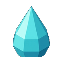
85L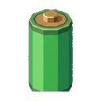
140kWSelected: Woodcutting Axe
1
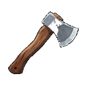
2
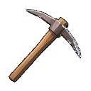
3
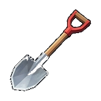
4
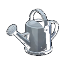
5
12
6
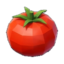
18
7
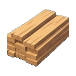
32
8
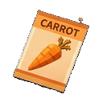
20
9
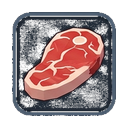
4
0
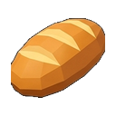
8
1 - 0 Select Slot
Scroll Hotbar
C Crafting Window
Crafting & Construction
✕
Tools
Energy & Solar
Water Treatment
Storage
Wood Axe
5 Logs · 2 Stones
Pickaxe
6 Logs · 4 Stones
Watering Can
8 Copper · 50G
Battery Cell
12 Iron · 120G